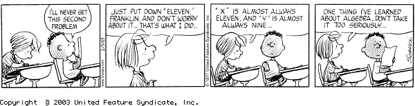

|
MATH 850 Algebra Spring 2017 |
 |
| Lecture | MWF 10:10-11:00 TH 211 |
| Prerequisites: | MATH 435/735 with a grade of C or better or consent of the instructor |
| Instructor | Dr. Matthias Beck |
| Office | Thornton Hall 933 |
| Office hours | Mondays 1-2, Wednesdays 9-10, Fridays 2-3 & by appointment |
Course objectives. Algebra studies the structure of sets with operations, such as integers with addition and multiplication, or vector spaces with linear maps. The abstract point of view, based on an axiomatic approach, reveals many deep ideas behind seemingly innocent structures--such as the arithmetic of counting numbers--and serves as an elegant organizing tool for the vast universe of modern algebra. Generations of brilliant minds have crystallized these ideas in the concepts of groups, rings, fields, modules, and their quotient structures and homomorphisms--the topics of MATH 335 & 435/735. Building on this foundation, our main goal in Math 850 is to study three areas of modern algebra whose common theme is polynomials: Gröbner bases, Galois theory, and the polynomial method.
Syllabus. Polynomial rings, irreducibility criteria, Gröbner bases & Buchberger's algorithm, field extensions, splitting fields, Galois groups, fundamental theorem of Galois theory, applications of Galois extensions, introduction to the polynomial method with applications in graph theory and incidence geometry.
Textbook.
David S. Dummit & Richard M. Foote, Abstract Algebra (3rd edition), Wiley 2004. [errata]
For the last part of the course, I will use parts of Larry Guth's Polynomial Methods in Combinatorics, AMS 2016, but I will not require my students to have this text.
Homework. I will assign homework problems as we go through the material; the problems assigned in any given week are due at 9 a.m. of the following Friday. If you type your solutions, you are welcome to submit your solutions over email as a pdf attachment. We can discuss the homework problems at any time during class. You may hand them in early to be able to correct your mistakes. Although you may (and should) work together with your class mates, the solutions you hand in have to be your own.
Grading system.
| Homework | 50% |
| Midterm Exam (March 8 ±2 days) | 25% |
| Final Exam (May 22, 8:00 a.m.) | 25% |
For in-class exams, you should be prepared to recall definitions, provide examples and nonexamples for each definition, recall the idea of simple proofs we covered in class, and do problems similar to the ones covered in our homework.
I want to ensure that each of you accomplishes the goals of this course as comfortably and successfully as possible. At any time you feel overwhelmed or lost, please come and talk with me.
The math. The way to learn math is through doing math. It is vital and expected that you attend every lecture. You will get a good feel for the math from there, but it is even more crucial that you do the homework. Working in groups is not only allowed but strongly recommended. The iLearn system allows you to send emails to anybody in your class. While I strongly encourage you to work together, the work you hand in has to be your own.
Fine print.
SFSU academic calender
Important Deadlines
BS rule
Academic Integrity and Plagiarism
Tutoring
CR/NCR grading
Incomplete grades
Late and retroactive withdrawals
Student disclosures of sexual violence
Students with disabilities
Religious holidays
This syllabus is subject to change. All assignments, as well as other announcements on tests, policies, etc., are given in class. If you miss a class, it is your responsibility to find out what's going on. I will try to keep this course web page as updated as possible, however, the most recent information will always be given in class. Always ask lots of questions in class; my courses are interactive. You are always encouraged to see me in my office.